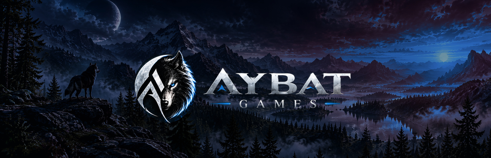

Tactical Vision Framework
A configurable Unity framework for optical devices, vision sensors, and specialized rendering workflows.

Aybat Games is an independent game development and tools publisher creating modular frameworks, reusable systems, and practical developer-focused assets for Unity creators.
Our work spans different development challenges, from immersive game systems to reusable development tools. Product information is updated as projects progress.
A configurable Unity framework for optical devices, vision sensors, and specialized rendering workflows.
A future framework concept focused on interactive device and operating-system-style experiences in Unity.
Aybat Games is a solo-developed brand guided by flexibility, maintainability, and hands-on production experience. We create tools intended to help developers solve technical problems without constraining their creative direction.
Our catalog is designed to evolve across different kinds of assets and frameworks — not a single genre, technology, or product family.
Get in touch